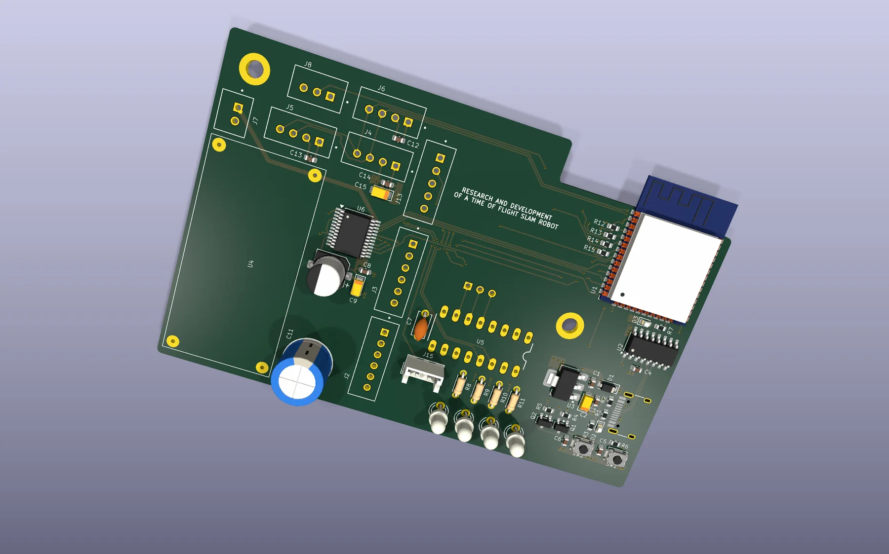
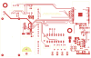
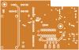
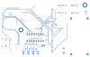

Integrated control
ESP32-WROOM-32 module replaces the full breakout board.
PCB development, stage 2
A production-oriented 4-layer design proposal that carries the first board’s field lessons into a compact controller featuring an onboard ESP32-WROOM-32, USB-C programming, and dedicated ground/power planes.

The implemented 2-layer board proved the system architecture, but it still depended on a bulky ESP32 devkit and discrete breakout boards. This second design explored how the robot controller could become significantly more compact, electrically robust, and production-ready.
I transitioned directly to the bare ESP32-WROOM-32 surface-mount module, integrated an onboard USB-C interface with CH340C UART bridge and automatic bootloader switching, implemented onboard low-noise LDO regulators, and segregated signal routes onto external layers while dedicating internal layers 2 and 3 to solid ground and power planes.
“Moving from 2 to 4 layers with dedicated internal planes cut electromagnetic interference from the high-current DC motor drives and reduced board surface area by over 35%.”
ESP32-WROOM-32 module replaces the full breakout board.
USB-C with CH340C and automatic reset/boot circuits for direct firmware flashing.
High-speed signals isolated from internal solid power and ground planes.
Smaller form factor frees up internal chassis volume for larger battery packs.
Designed to comply with standard manufacturer 4-layer stack-ups (Signal / GND / PWR / Signal). Select any layer to enlarge it.

High-density component pads, ESP32 RF antenna keep-out, and high-frequency digital traces.

Continuous uninterrupted copper return plane providing low-impedance paths for all high-speed signals.
Split copper pour distributing clean +3.3 V logic power and regulated +5 V sensor rails.

Secondary signal connections, test point access, and thermal relief copper pours.
KiCad interactive BOM cross-referencing SMD passives, ICs, USB-C receptacle, and keyed connectors.